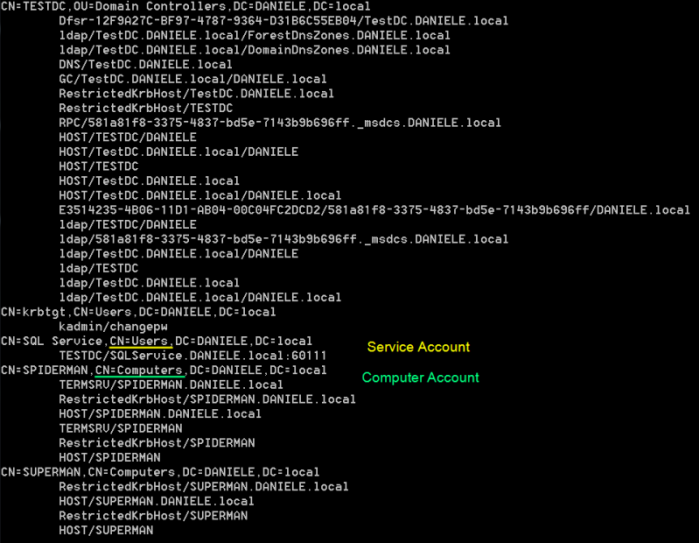

1. Enumerate domain accounts with SPNs set
Enumerate the domain accounts with SPNs set
Services that support Kerberos authentication require to have a Service Principal Name (SPN) associated to point users to the appropriate resource for connection.
PS> setspn -T [DOMAIN] -Q */*
-T [domain] → perform query on the speicified domain or forest (when -F is also used)
-Q */* → query for existence of SPN for all the service names and all host names
This command show us the mapping between user accounts and services (CN=Users)
Kerberoast tool from Tim Medin(
GitHub - nidem/kerberoast)
PS> cscript.exe GetUserSPNs.vbs